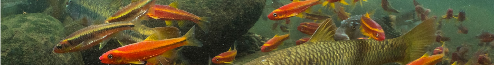
FRESH WATER ANIMALS
TYPES
Hover over the animals
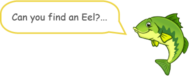
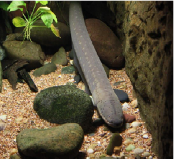
COMMON NAME:
Eel
MAORI NAME:
Tuna
COOL FACTS:
Eels actually have
terrible eyesight
you found me! :)
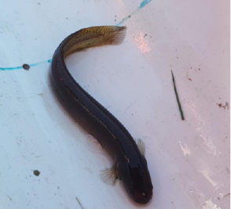
COMMON NAME:
Mudfish
MAORI NAME:
hauhau
COOL FACTS:
Some mudfish have
gold flecks along its body
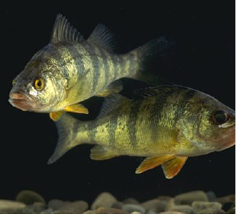
COMMON NAME:
Perch
MAORI NAME:
Pūaihakarua
COOL FACTS:
Female Perch tend to
live longer, grow faster and bigger!
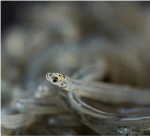
COMMON NAME:
Whitebait
MAORI NAME:
Inanga
COOL FACTS:
Whitebait are known
to be a delicacy in New Zealand
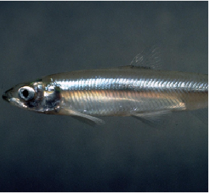
COMMON NAME:
Smelt
MAORI NAME:
Toitoi
COOL FACTS:
Smelt fish when eaten
provide lots of health benefits
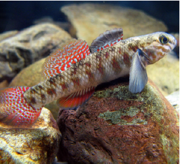
COMMON NAME:
Bullies
MAORI NAME:
Pōrohe
COOL FACTS:
Bullies are very good
at camouflaging and only seen when moving quickly in shallow waters
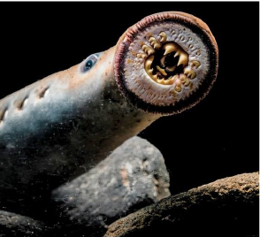
COMMON NAME:
Lamprey
MAORI NAME:
Piharau
COOL FACTS:
Lamprey's have no jaw
or any other bone structure as they are made mostly of cartilage
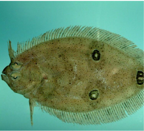
COMMON NAME:
Flounder
MAORI NAME:
Patiki
COOL FACTS:
Flounder have a flat
body which allows them to blend in with the river floor
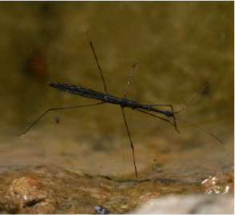
COMMON NAME:
Hydrometra
MAORI NAME:
none
COOL FACTS:
They have velvety hairs
on their feet allowing them to glide on water
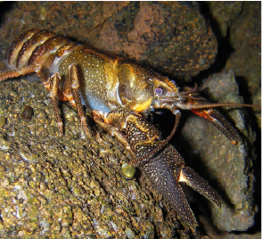
COMMON NAME:
Crayfish
MAORI NAME:
Kōura
COOL FACTS:
Crayfish can't walk
backwards
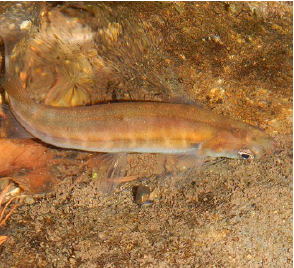
COMMON NAME:
Cockabully
MAORI NAME:
Giant kōkopu
COOL FACTS:
The oldest Giant kōkopu
lived to be between 21-27 years old
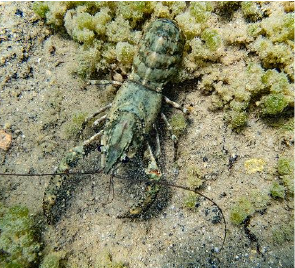
COMMON NAME:
Paranephrops
MAORI NAME:
Kōura
COOL FACTS:
They often wave
their claws